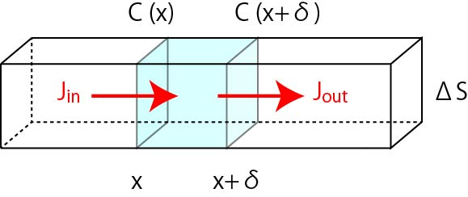
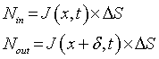
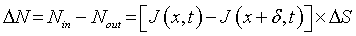
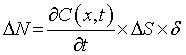
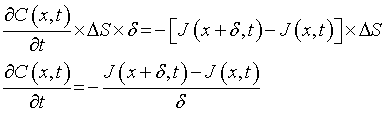
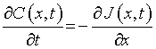
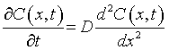

フィックの第二法則
次は，フィックの第二法則，です．
今度もまた，直方体を考えますが，検討するエリアを，
xとx+δｘの間の空間
とします．
また，断面積を，ΔS，とします．

図のように，
左から地点ｘへの流束をJin
右から地点ｘ＋δへの流束をJout
とすることで，検討するエリアへの流れがどうなっているかを考えていきましょう．
単位時間に流入・流出する分子の量は，

となります．ですので，単位時間あたりの分子の数の変化は，

となります．
この単位時間あたりの分子の数の変化は，このエリアの時間変化でも表すことができて，

となります．この二つの式から，

δが十分小さいと，

となります．右辺は，フィックの第一法則から，

となります．これがフィックの第二法則で，拡散方程式とも呼ばれています．
今回は一次元の流れを考えましたが，二次元，三次元に拡張できます．
次に，円柱座標系における拡散の様子を考えていきましょう．